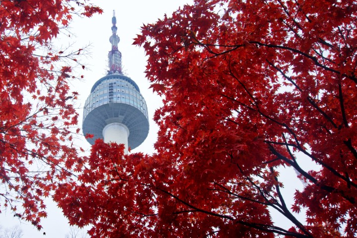
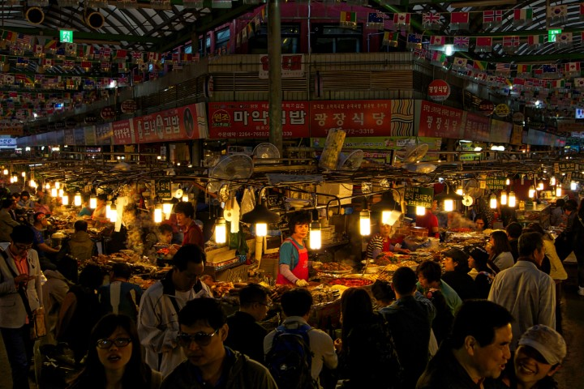
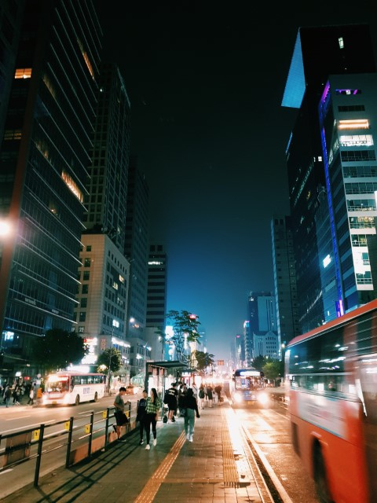

Indulging in so many different Korean dramas and watching Kpop videos, I have developed a desire to visit some attractions in South Korea.
The very first drama that I watched was called Boys Over Flowers. It featured Namsam Tower and various food dishes. So, why not visit the tower itself and a food market?


Two words that most people will connect with South Korea are: Gangnam and Kimchi.

I am a big fan of Kimchi now, and I would probably visit Gangnam district, but I have watched enough shows to know that it's not the best area to get a cultural experience in South Korea.
The above images are show some of the interests that I have in South Korea, but the one that a single image doesn't do justice to is Jeju Island. The island is a popular leisure and wealthy travel destination for many drama characters.
Follow the Jeju Island link to a travel website to peak your own interest.
My niece is here. She is watching Dora the Explorer
It's a farm animal episode. She LOVES animals.
She is making all the animal sounds.
The Korean drama that started it all for me...
My favorite band is Big Bang! Here is one of their most popular songs.